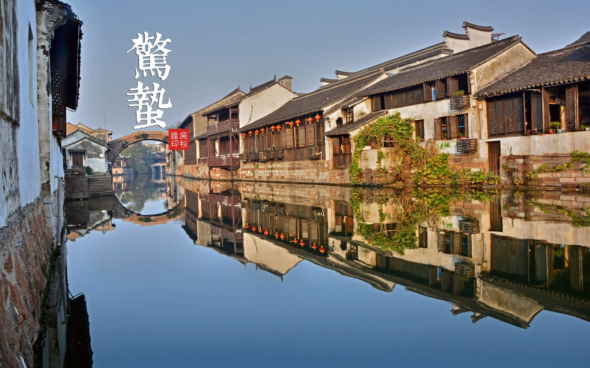

| |
Tourpedia |
Home Discover Destination Strategy BookTickets |
Visa |
Climate |
Foreign currency |
|||
Fill in the application form truthfully, fully and clearly. The application must be signed (the juvenile may be signed by the parent or guardian and noted the relationship). The application materials should be true and ready. The person who falsifies the material or materials shall be rejected. |
China is a huge country with a diverse climate and needs to be prepared for different seasons of clothing. There are three main features of the climate in China:significant monsoon feature,a clear continental climate and a variety of climate types. |
China's currency is referred to as "RMB", change some RMB at home before setting out, can be in a bank in China and hotel in local currency, bank exchange rate tended to be slightly lower than the hotel, please note that the bank between 12:00 - then have a rest |
|||
Chinese food |
The social security |
Language |
|||
Chinese restaurants are everywhere and open late, and most restaurants have the menu, including all kinds of food photos, you can see the next door there is what looks especially delicious food on the table. If your stomach is not good enough, don't eat and drink directly from the faucet. |
China is usually a safe country, of course traveling in big cities such as Beijing and xi 'an, pay more attention to your wallet.There will be a lot of women in these cities who will give you money for money, and you'll have to get away from it. |
Most of the civil servants, customs officers, police, hotel staff and men in the street are not able to speak English or have any knowledge. If you speak slowly, most young people can understand simple English. Don't expect anyone in a hotel or shop to understand English, only the hotel staff will understand your English. |

|

|
|---|